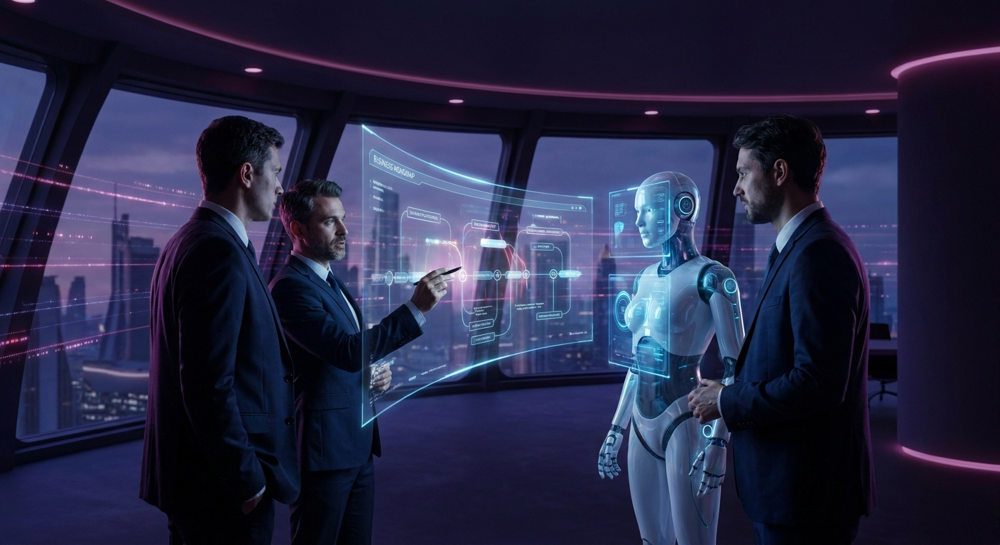
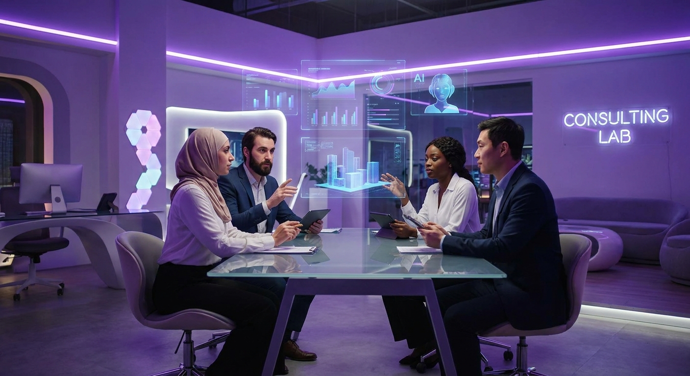
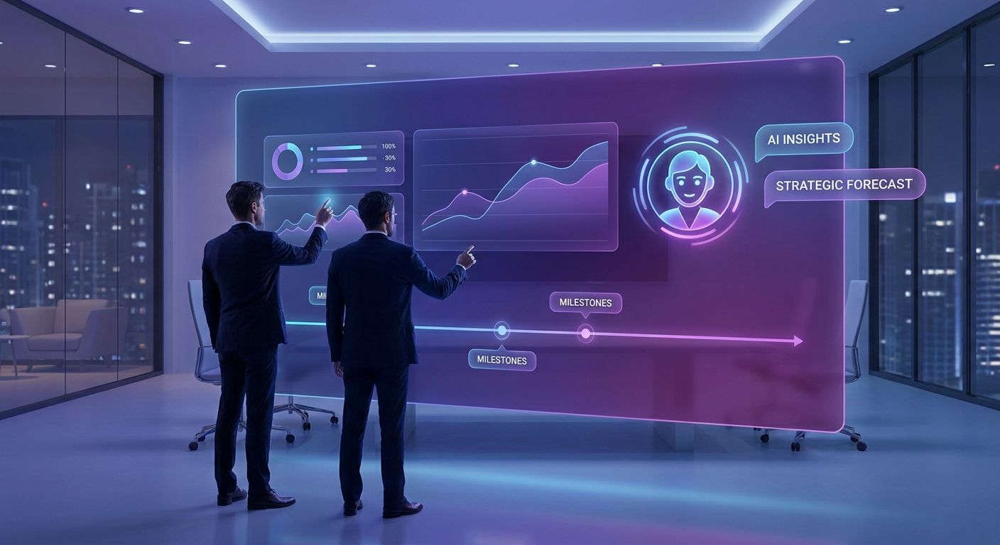

Advisory with accountability
We work alongside executives, transformation leads, and delivery teams to shape credible AI roadmaps, decision frameworks, and measurable next steps — then stay close enough to execution that momentum does not evaporate after the kickoff.

Built for real teams
Our engagements are designed for organisations balancing customer expectations, governance, and BAU pressure. That means practical workshops, lightweight delivery rituals, and capability uplift that respects how busy teams actually operate.

Outcomes first
Every program starts with a clear definition of value: what changes, who benefits, how success is measured, and what must be de-risked early. The result is sharper prioritisation, cleaner reporting, and transformation work that feels commercially grounded.